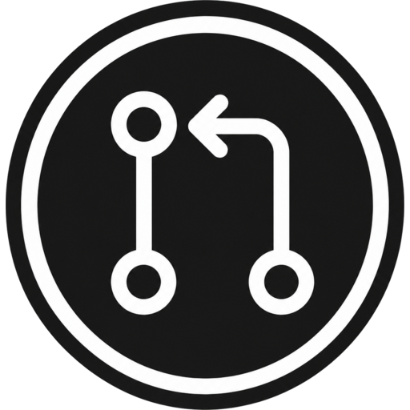

## Markdown files
Posts and pages appear as readable .md files for agents, diffs, and local editors.

Push MD Download plugin
Agents and any Git client work on ordinary .md files while your
WordPress database remains the source of truth. Push MD checks roles, creates
revisions, rejects stale pushes, and lets WordPress render the site.
Push MD is for teams that want Git-shaped work without moving the source of truth out of WordPress. Use any Git client for agent runs, local Markdown edits, and static-site-style publishing flows that still need WordPress roles and revisions.
### coding agents
Give agents a normal checkout instead of a separate sync repo. WordPress coordinates each run through authentication, stale-state checks, and revisions.
[x] Clone supported content from WordPress with any Git client.[x] Edit Markdown, block templates, and styles locally.[x] Carry site guidance in AGENTS.md and SKILL.md.[x] Push only after WordPress accepts the change.Agent skills depend on WordPress Guidelines.
Once WordPress Guidelines are enabled, Push MD exposes skills as
wp_guideline/skills/{slug}/SKILL.md and adds the usual agent
entry points for local tools.
### static site generators
If you like Astro, Jekyll, or a Markdown vault, use a local file tree while WordPress keeps handling previews, roles, rendering, publishing, and revisions.
[x] Write posts and pages as Markdown.[x] Keep template parts as block HTML.[x] Version Global Styles as JSON.[x] Pull WP-Admin edits before the next local run.post/*.md
posts and revisions
page/**/*.md
pages and hierarchy
wp_template_part/**/*.html
Site Editor block markup
wp_global_styles/*.json
Global Styles overlays
Short answers for the places where Git workflows usually get tangled with WordPress publishing, permissions, and revision history.
Yes. Your WordPress database stays authoritative. Git clients read and write through Push MD, so there is no separate repository to reconcile.
Yes. Agents, terminals, desktop apps, and editors can use normal Git over HTTPS against the WordPress remote.
Push MD stores agent skills as WordPress Guidelines. Today, that means the
site needs the Gutenberg plugin installed and active, with the Guidelines
experiment turned on from the Gutenberg Experiments page. After that, skills
appear in the checkout under wp_guideline/skills/{slug}/SKILL.md,
with generated aliases such as AGENTS.md for agent discovery.
WP-Admin edits become Git-visible on pull. If a local checkout is stale, Push MD rejects the push before writing over newer WordPress content.
Push MD uses WordPress authentication and Application Passwords, then respects the current user's capabilities before accepting a write.
Accepted Markdown content pushes go through WordPress APIs and create WordPress revisions, so changes remain reviewable in the usual WordPress history.
No. It gives you the local-file workflow people like in static site generators, while WordPress still handles previews, rendering, publishing, roles, and revisions.
Install Push MD, authenticate with a WordPress Application Password, then clone
the trunk branch from your site. Any Git client can talk to WordPress directly.
trunk.git clone https://example.com/wp-json/git/v1/md.git my-site
Pushes to other branches are rejected. WordPress remains the source of truth.